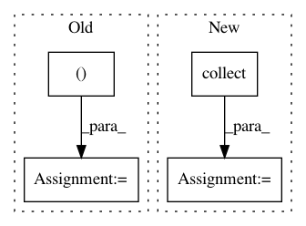

13831dd959789127f9735275757f1d660de22b82,pymc3/variational/stein.py,Stein,dlogp,#Stein#,53
Before Change
@node_property
def dlogp(self):
loc_random = self.input_matrix[..., :self.approx.local_size]
glob_random = self.input_matrix[..., self.approx.local_size:]
loc_grad, glob_grad = tt.grad(
self.logp_norm.sum(),
[self.approx.symbolic_random_local_matrix,
self.approx.symbolic_random_global_matrix],
disconnected_inputs="ignore"
)
loc_grad, glob_grad = theano.clone(
[loc_grad, glob_grad],
{self.approx.symbolic_random_local_matrix: loc_random,
self.approx.symbolic_random_global_matrix: glob_random}
)
return tt.concatenate([loc_grad, glob_grad], axis=-1)
@memoize
@change_flags(compute_test_value="off")
After Change
dlogp = tt.concatenate(list(map(unpack, gradients_for_rmatrices)), axis=-1)
if self.use_histogram:
dlogp = theano.clone(
dlogp,
dict(zip(self.approx.symbolic_randoms, self.approx.collect("histogram")))
)
return dlogp
@node_property
def grad(self):
In pattern: SUPERPATTERN
Frequency: 3
Non-data size: 4
Instances
Project Name: pymc-devs/pymc3
Commit Name: 13831dd959789127f9735275757f1d660de22b82
Time: 2017-09-02
Author: maxim.v.kochurov@gmail.com
File Name: pymc3/variational/stein.py
Class Name: Stein
Method Name: dlogp
Project Name: brilee/MuGo
Commit Name: 5b1feb37e68471a811a90e008eff787da294c477
Time: 2016-09-07
Author: brian.kihoon.lee@gmail.com
File Name: policy.py
Class Name: PolicyNetwork
Method Name: train
Project Name: brilee/MuGo
Commit Name: 5b1feb37e68471a811a90e008eff787da294c477
Time: 2016-09-07
Author: brian.kihoon.lee@gmail.com
File Name: policy.py
Class Name: PolicyNetwork
Method Name: check_accuracy